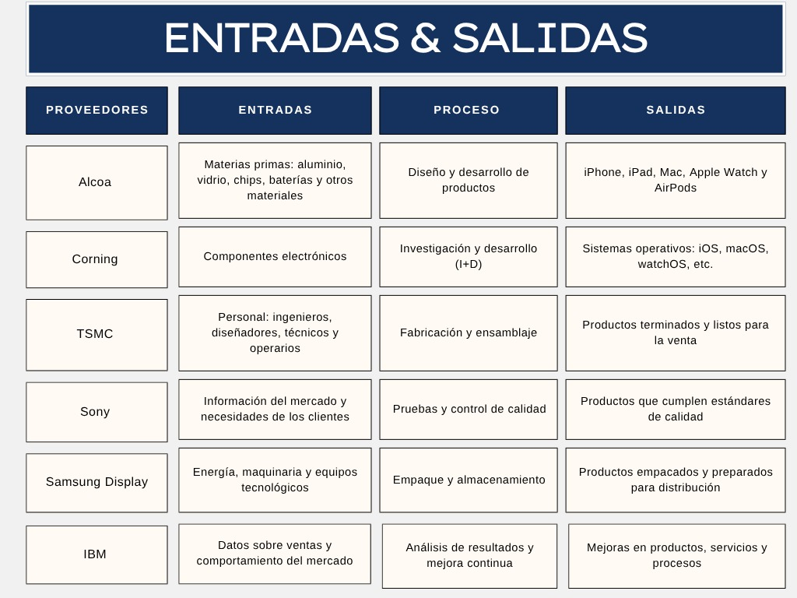
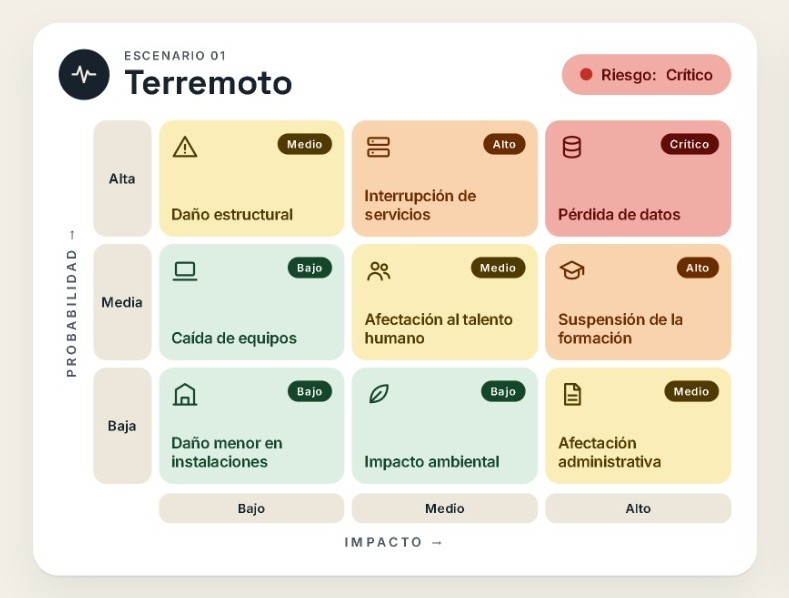
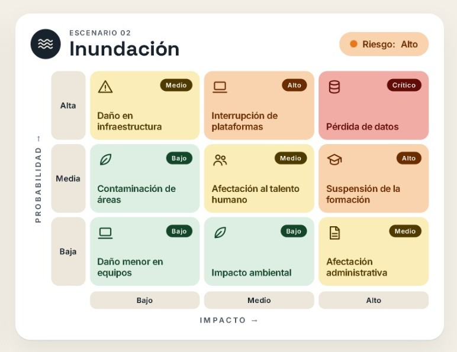
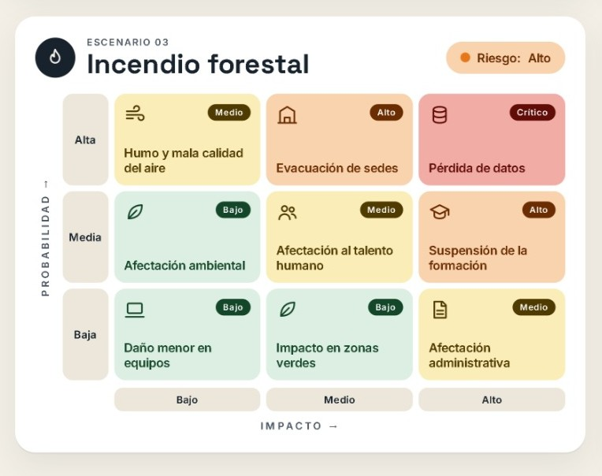
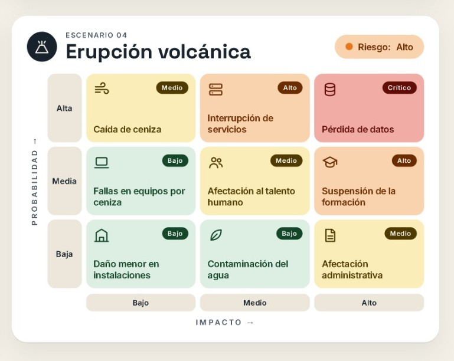

Liderazgo y compromiso visible
Firmar y comunicar la política de SST; participar en revisiones y auditorías en planta.
Análisis organizacional: entradas y salidas, partes interesadas, entorno PESTEL y procesos
Análisis detallado de los recursos que ingresan al sistema de Apple (materiales, talento, tecnología) y el valor que se entrega al mercado (productos, servicios, dividendos).

Mapeo del nivel de influencia e interés de los stakeholders clave: desde clientes y empleados hasta proveedores e inversores.
Asignacion de responsables por proceso: Responsable, Aprueba, Consultado e Informado.
Impacto de los factores Políticos, Económicos, Socioculturales, Tecnológicos, Ecológicos y Legales en el ecosistema global de Apple.

Visualización de los procesos estratégicos, misionales (I+D, ensamblaje, marketing, retail) y de apoyo que mantienen la maquinaria operativa.

Apple orienta su gestión hacia la protección del medio ambiente, la salud y la seguridad. Busca cumplir y superar las normas legales ambientales y de seguridad aplicables. También promueve la mejora continua de sus procesos y su desempeño ambiental. La empresa trabaja en la reducción de sus emisiones de gases de efecto invernadero. Mediante su estrategia Apple 2030, busca disminuir significativamente su huella de carbono. Además, fomenta el uso de energías renovables en sus operaciones y proveedores. Apple impulsa el uso de materiales reciclados y responsables en sus productos. También desarrolla acciones para reducir residuos, consumo de agua y contaminación. Exige a sus proveedores prácticas responsables en materia laboral, ambiental y de seguridad. Finalmente, integra la sostenibilidad en el diseño, fabricación y ciclo de vida de sus productos.
Matriz de aspectos e impactos ambientales asociada a los productos y actividades de Apple.


El compromiso de CEO, COO y vicepresidencias debe traducirse en decisiones visibles y recursos concretos para proteger a las personas.
Firmar y comunicar la política de SST; participar en revisiones y auditorías en planta.
Integrar la seguridad y salud en decisiones de diseño, manufactura y proveedores.
Garantizar presupuesto para brigadas, equipos de emergencia y capacitación.
Detener la producción ante un incidente grave, como un incendio de baterías de litio.
Reportar indicadores de SST a la junta y exigir cumplimiento a proveedores como Foxconn.
Asegurar que toda la cadena cumpla la normativa laboral y de seguridad de cada país.
Aprender de cada incidente y ajustar los procesos para evitar que vuelva a ocurrir.
Un ciclo continuo para anticipar peligros, aplicar controles, evaluar resultados y fortalecer el sistema.
Política de SST, identificación de peligros y objetivos anuales.
Capacitación, COPASST, brigadas de emergencia y exámenes médicos ocupacionales.
Comprobar que las acciones funcionen mediante:
Implementar acciones correctivas y preventivas, y realizar la revisión anual por la alta dirección.
Escenario de una planta hipotética de ensamblaje de iPhone con 1.000 trabajadores. En abril se implementa el programa de controles de emergencia: simulacros, brigadas, extinción en áreas de baterías de litio y kits de contención de derrames.
Datos hipotéticos con fines ilustrativos
Accidentes del mes por cada 100 trabajadores · meta ≤ 0,5 %
Porcentaje mensual · meta ≤ 3,0 %
Resultados trimestrales y semestrales · meta ≥ 90 %
| Indicador | Fórmula | Frecuencia |
|---|---|---|
| Frecuencia de accidentalidad | (Accidentes de trabajo del mes / trabajadores del mes) × 100 | Mensual |
| Severidad de accidentalidad | (Días de incapacidad + días cargados / trabajadores del mes) × 100 | Mensual |
| Ausentismo por causa médica | (Días de ausencia por incapacidad / días de trabajo programados) × 100 | Mensual |
| Cumplimiento del plan de capacitación | (Capacitaciones ejecutadas / programadas) × 100 | Trimestral |
| Simulacros realizados | (Simulacros ejecutados / programados) × 100 | Semestral |
| Peligros intervenidos | (Peligros con control implementado / peligros priorizados) × 100 | Trimestral |
| Indicador | Periodo | Resultado | Meta |
|---|
Material visual de apoyo para la preparación y respuesta ante emergencias.




Controles definidos para los procesos estratégicos, misionales y de soporte. La tabla incluye los 33 registros del archivo fuente.
Descargar archivo Excel · Control op fin.xlsx
| N.º | Nivel | Proceso | Descripción | Tipo | Control operacional | Evidencia | Norma y numeral | Responsable | Frecuencia |
|---|---|---|---|---|---|---|---|---|---|
| 1 | Estratégico | Planeación estratégica | Visión y hoja de ruta | Calidad | Revisión trimestral de la hoja de ruta por el comité directivo, con objetivos e indicadores aprobados antes de ejecutar | Acta de comité firmada | ISO 9001:2015 – 8.1 | Dirección general | Trimestral |
| 2 | Estratégico | Planeación estratégica | Visión y hoja de ruta | Seguridad de la información | Clasificación de documentos estratégicos como confidenciales y acceso restringido por rol con MFA | Matriz de accesos y bitácora | ISO/IEC 27001:2022 – 8.1 | CISO | Semestral |
| 3 | Estratégico | Planeación estratégica | Visión y hoja de ruta | Ambiental | Metas ambientales incluidas en la hoja de ruta con responsable y presupuesto asignado | Plan estratégico con metas ambientales | ISO 14001:2015 – 8.1 | Dirección de sostenibilidad | Anual |
| 4 | Estratégico | Innovación y desarrollo | Chips M y Apple Intelligence | Calidad | Revisión por fases (stage-gate): requisitos, pruebas y aprobación antes de pasar a la siguiente fase | Acta de cierre de fase firmada | ISO 9001:2015 – 8.1 | Líder de I+D | Por fase |
| 5 | Estratégico | Innovación y desarrollo | Chips M y Apple Intelligence | Seguridad de la información | Protección de propiedad intelectual: repos por rol con MFA, ninguna credencial en el código y acuerdos de confidencialidad | Pull request aprobado y bitácora de accesos | ISO/IEC 27001:2022 – 8.1 | Líder de I+D / CISO | Continuo |
| 6 | Estratégico | Innovación y desarrollo | Chips M y Apple Intelligence | SST | Inspección de laboratorios de prueba y uso obligatorio de EPP y protección ergonómica | Lista de inspección y registro de entrega de EPP | ISO 45001:2018 – 8.1 | Coordinador SST | Mensual |
| 7 | Estratégico | Marca y ecosistema | Identidad y experiencia | Calidad | Aprobación de piezas de marca contra la guía de identidad antes de publicar | Registro de aprobación de piezas | ISO 9001:2015 – 8.1 | Dirección de marca | Por pieza |
| 8 | Estratégico | Marca y ecosistema | Identidad y experiencia | Seguridad de la información | Consentimiento verificable del usuario y minimización de datos en campañas y servicios del ecosistema | Registro de consentimientos | ISO/IEC 27001:2022 – 8.1 | Oficial de privacidad | Por campaña |
| 9 | Estratégico | Marca y ecosistema | Identidad y experiencia | Ambiental | Validación previa de toda declaración ambiental con evidencia técnica | Dossier de sustento de declaración | ISO 14001:2015 – 8.1 | Sostenibilidad / Legal | Por declaración |
| 10 | Misional | Diseño de producto | Hardware y software | Calidad | Verificación y validación del diseño con pruebas documentadas y aceptación antes de liberar a producción | Informe de validación firmado | ISO 9001:2015 – 8.1 | Líder de diseño | Por versión |
| 11 | Misional | Diseño de producto | Hardware y software | Ambiental | Ecodiseño: análisis de ciclo de vida y porcentaje mínimo de materiales reciclados definido en la especificación | Reporte de ciclo de vida del producto | ISO 14001:2015 – 8.1 | Ingeniería de producto | Por producto |
| 12 | Misional | Diseño de producto | Hardware y software | Seguridad de la información | Control de versiones de planos y código, con acceso por rol y trazabilidad de cambios | Historial de versiones y bitácora de accesos | ISO/IEC 27001:2022 – 8.1 | PMO de producto | Continuo |
| 13 | Misional | Manufactura | Producción y logística | SST | Permiso de trabajo y bloqueo/etiquetado (LOTO) en intervención de máquinas, con EPP según matriz de riesgos | Permiso firmado y registro LOTO | ISO 45001:2018 – 8.1 | Jefe de planta | Por intervención |
| 14 | Misional | Manufactura | Producción y logística | Ambiental | Segregación, registro y disposición de residuos con gestores autorizados; medición de emisiones y consumo de energía | Manifiestos de residuos y reporte mensual de consumo | ISO 14001:2015 – 8.1 | Gestor ambiental | Mensual |
| 15 | Misional | Manufactura | Producción y logística | Calidad | Inspección en línea con muestreo y liberación de lote solo con resultados conformes | Registro de inspección y certificado de lote | ISO 9001:2015 – 8.1 | Control de calidad | Por lote |
| 16 | Misional | Marketing y ventas | Apple Store y online | Calidad | Verificación de precios, garantías e información al cliente antes de publicar o vender | Lista de verificación de oferta | ISO 9001:2015 – 8.1 | Gerente comercial | Por oferta |
| 17 | Misional | Marketing y ventas | Apple Store y online | Seguridad de la información | Cifrado de datos de pago y de clientes; acceso a datos solo por rol | Reporte de cifrado y revisión de accesos | ISO/IEC 27001:2022 – 8.1 | TI comercial | Trimestral |
| 18 | Misional | Marketing y ventas | Apple Store y online | SST | Control de aforo, rutas de evacuación señalizadas y simulacro en tiendas | Registro de simulacro e inspección de tienda | ISO 45001:2018 – 8.1 | Gerente de tienda | Semestral |
| 19 | Misional | Servicio al cliente | AppleCare y soporte | Calidad | Atención con tiempos de respuesta definidos (SLA) y encuesta de satisfacción por caso cerrado | Reporte de SLA y resultados de encuesta | ISO 9001:2015 – 8.1 | Líder de soporte | Mensual |
| 20 | Misional | Servicio al cliente | AppleCare y soporte | Seguridad de la información | Verificación de identidad del cliente antes de acceder o modificar su cuenta | Guion de verificación y auditoría de llamadas | ISO/IEC 27001:2022 – 8.1 | Líder de soporte | Continuo |
| 21 | Misional | Servicio al cliente | AppleCare y soporte | Ambiental | Recolección y reciclaje de equipos devueltos con gestor autorizado | Certificado de disposición final | ISO 14001:2015 – 8.1 | Logística inversa | Mensual |
| 22 | Soporte | Talento humano | Reclutamiento | SST | Examen médico de ingreso e inducción en SST antes de iniciar labores | Certificado médico y registro de inducción | ISO 45001:2018 – 8.1 | Gestión humana / SST | Por ingreso |
| 23 | Soporte | Talento humano | Reclutamiento | Calidad | Definición de perfiles de cargo y verificación de competencias antes de contratar | Perfil aprobado y evaluación de competencias | ISO 9001:2015 – 8.1 | Gestión humana | Por vacante |
| 24 | Soporte | Talento humano | Reclutamiento | Seguridad de la información | Verificación de antecedentes, acuerdo de confidencialidad y retiro de accesos al terminar el contrato | Acuerdo firmado y acta de retiro de accesos | ISO/IEC 27001:2022 – 8.1 | Gestión humana / TI | Por ingreso y retiro |
| 25 | Soporte | TI y sistemas | Infraestructura | Seguridad de la información | Gestión de cambios aprobada, parches aplicados y copias de respaldo con prueba de restauración | Ticket de cambio y reporte de restauración | ISO/IEC 27001:2022 – 8.1 | Líder de TI | Mensual |
| 26 | Soporte | TI y sistemas | Infraestructura | Ambiental | Eficiencia energética del centro de datos y disposición de residuos electrónicos (RAEE) con gestor autorizado | Reporte de consumo y certificado RAEE | ISO 14001:2015 – 8.1 | Líder de infraestructura | Mensual |
| 27 | Soporte | TI y sistemas | Infraestructura | Calidad | Gestión de incidentes con clasificación, SLA y cierre verificado | Reporte de incidentes y SLA | ISO 9001:2015 – 8.1 | Mesa de ayuda | Mensual |
| 28 | Soporte | Finanzas | Presupuesto | Calidad | Conciliaciones y doble aprobación de pagos y ajustes presupuestales | Conciliación firmada | ISO 9001:2015 – 8.1 | Director financiero | Mensual |
| 29 | Soporte | Finanzas | Presupuesto | Seguridad de la información | Segregación de funciones en sistemas financieros y revisión periódica de accesos | Matriz de segregación y revisión de accesos | ISO/IEC 27001:2022 – 8.1 | Director financiero / CISO | Trimestral |
| 30 | Soporte | Finanzas | Presupuesto | SST | Presupuesto asignado y ejecución seguida del plan anual de SST | Informe de ejecución presupuestal SST | ISO 45001:2018 – 8.1 | Director financiero | Trimestral |
| 31 | Soporte | Legal y cumplimiento | Privacidad y normas | Seguridad de la información | Registro de tratamiento de datos personales y evaluación de impacto de privacidad en nuevos proyectos | Registro de tratamiento y evaluación firmada | ISO/IEC 27001:2022 – 8.1 | Oficial de privacidad | Por proyecto |
| 32 | Soporte | Legal y cumplimiento | Privacidad y normas | Ambiental | Matriz de requisitos legales ambientales actualizada y evaluación de cumplimiento | Matriz legal y reporte de cumplimiento | ISO 14001:2015 – 8.1 | Asesor legal | Semestral |
| 33 | Soporte | Legal y cumplimiento | Privacidad y normas | SST | Matriz de requisitos legales de SST actualizada y evaluación de cumplimiento | Matriz legal SST y reporte de cumplimiento | ISO 45001:2018 – 8.1 | Asesor legal / SST | Semestral |
Controles clave por área para reducir la probabilidad de incidentes y responder de forma organizada.